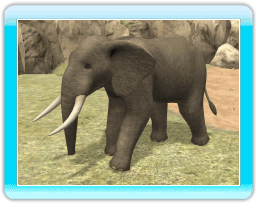

18 |
Intro to Animals |
 |

●Asiatic Lion This forest-dwelling carnivore usually travels in small herds, but hunts alone. ●Grevy's Zebra This uniquely-patterned herbivore can be found in the savannah or semidesert regions. It spends most of its time eating when awake. 
●Hippopotamus This large herbivore is found in the low latitudes of Africa, and spends most of its time in water. It is able to stay under the water for about 5 minutes. 
●Giant Panda This popular herbivore resides in bamboo groves, where it spends most of the day munching on bamboo leaves.  ●African Elephant This large herbivore can be found in the savannah or in forests. It often bathes in water due to how quickly the sweltering heat can dry its skin. 
●3-Banded Armadillo This tiny omnivore dwells in forests and savannah regions. It is very small at only 8 inches long, and rolls into a ball to protect itself from predators. 
●American Black Bear This omnivore is usually found in forests, and is very skilled at climbing trees. 
●Malayan Tapir This herbivore is usually found in forests near water, or in moist areas, where it generally travels alone or in pairs. |
 |
 |